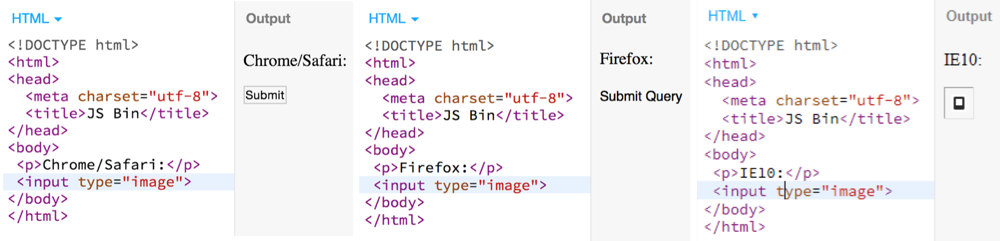
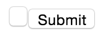
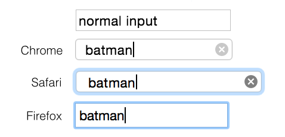
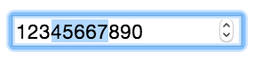

Some people build furniture. Some people knit. Some people have hobbies that
don’t involve HTML specs from the 90s. I am not those people. So here’s a story
about <input>, how it got to be the jerk that it is, and why it needs to die in a fire.
The early years
1995 was a good year. Friends, ER, Xena were all on TV. TLC had dominated the
charts with “Waterfalls”. Browsers were ok, because HTML was pretty ok. We had
Mosaic, Netscape and IE1, and the HTML2
spec was finally getting around to standardizing forms. 1995 was the year
when <input> was born, and now that it’s about old enough to drink, we need to have a talk.
Input initially came along with 8 types: text, password, checkbox, radio, image, hidden,
submit and reset, and in a separate RFC that followed, file.
Wait, did you say image? Yeah, let’s talk about it.
<input type="image" src="cat.png"> looks like an image, but it’s actually an image
button that also submits the (x,y) coordinates of where you clicked on the image. Unless you don’t specify
a src file, in which case it’s an “image button” that says “Submit”.
Unless you’re in Firefox, in which case it says “Submit Query” and looks like
a label. Unless you’re in
IE in which case it doesn’t say anything at all.

Also, for your local pub trivia night, the message that the type=file input to
indicate you haven’t done anything is “No file chosen”, “no file selected”,
“No file selected”, and just an empty textbox on Chrome, Safari, Firefox and IE respectively.
Right, ok.
And now, a <textarea> rant
I always thought input and textarea came at later dates, and that explained
why they’re kind of insanely different. This is kind of true, since input was
around in Mosaic since at least 1993, and it was a fixed-up implementation of
ISINDEX. However, on the record, they were both children of the HTML2 spec,
which decided that <input> is a self closing tag and uses a value attribute,
while <textarea> needs a closing tag and uses its contents, even though they
both just hold text that someone else has entered:
<input value="batman">
<textarea rows="1">batman</textarea>
Update: someone pointed out that <textarea> needs to support multilines,
and newlines aren’t allowed inside attributes values, which is why it needed
to use its contents. Makes sense!
1995-2011, the slow years
In 1999, HTML4 only added type="button". My favourite part about
it is that with no custom styles, an <input type="button"> and an
<input type="button" value="Submit"> on the same line, do not align vertically
on Chrome/Safari/Edge.

Then everything got worse
Later, in 2011, the HTML5 spec added a billion new input types. It’s now 2015, and
most are not implemented. The TL; DR of the missing features is: type=color only
works on Firefox/Chrome, date/time
inputs only work on Chrome/Edge/iOS, and
everything that works on Chrome works on Opera. Here’s a
demo of all of the different input types to date,
so that you can compare and sob by yourself.
Let’s talk about some interesting ones.
<input type="search"> has some arbitrary text padding, borders,
and badass mid-2000s-style rounded corners, all of which are inconsistent across all browsers, and almost
impossible to get rid of.

If you’re on a lucky browser that does support type="date", don’t worry about
styling the date picker — there are 8 weirdo ::webkit pseudo-selectors out there,
but they’ll only let you style
the input textbox, and not the actual date dropdown. CSS is bad for your health anyway.
Just when you thought it couldn’t get any worse, JavaScript
You see, I can justify CSS quirks. I worked on Chrome for 2 years,
I work next to the Blink team now, I understand we’re all writing different
renderers and they all have their own CSS bugs. However, the <input> API isn’t
quirky — it’s literally just a jar of spiders, and the moment you open the jar,
it’s too late. You’re covered in spiders. Even your cat is a spider now. Better find
some fire.
Since 1995, inputs with type radio and checkbox have
had an extra attribute, checked, to determine their checked status. Since an HTMLInputElement
is an HTMLInputElement is an HTMLInputElement, this also means that all other
input types have this property; it just gets ignored. So even though it doesn’t
make sense, this is perfectly fine:
var textInput = document.querySelector('input[type="text"]');
console.log(textInput.checked); // prints false.
textInput.checked = true;
console.log(textInput.checked); // prints true.
// did not open the hellmouth.
Cool. Cool cool cool.
Inputs also have text, and text can be selected, so the HTMLInputElement
prototype also defines two properties,
selectionStart and selectionEnd which are two numbers defining your selection
range. So you can do:
document.querySelector('input').selectionStart += 2;
And advance the beginning of the text selection by 2 characters. Super pedestrian, except for
the fact that the selectionStart — and brethren — attribute is only available for inputs
of type text, url and password and just accessing it (not even setting it)
throws an exception for all other types:
Uncaught DOMException: Failed to read the 'selectionStart'
property from 'HTMLInputElement': The input element's type ('number')
does not support selection.
Even though manually I can totally select that text:

So in some cases, irrelevant properties can be interacted with, but in other cases they open the hellmouth. Neat-o. That’s just the kind of consistency I look for in an API.
🙈
There’s more. I’m sure there’s more. The thing is, browsers have had 21 years to sort out inputs, and they haven’t even managed to agree on how to communicate “you haven’t picked a file”.
Now imagine the future where Web Components are supported
natively, and someone else is allowed to write a <better-input>, an element
that is a real, encapsulated DOM element, and not just a div soup. Imagine using this <better-input>
that isn’t implemented differently in each browser, that looks the same everywhere, and that
probably also knows how to bake you a cherry pie. IMAGINE. ✨